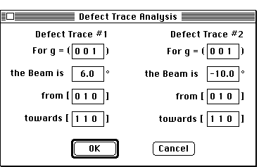

Distributed By: Virtual Labs
Find a Defect Direction Dialog Box:
PATH...{Stereographic Projection Object}:Function Menu:Find a Defect
Direction...

Trace Analysis Dialog Box
Stereographic projections are frequently used in crystallography to understand
crystal deformation and crystal symmetry. One additional use is in the analysis
of defect structure. It is common to use the stereographic projection in
conjunction with TEM micrographs of dislocation structures to determine
the direction vector for a dislocation line. The knowledge of the crystal
orientation determined from the diffraction pattern, and the projection
of the dislocation from two orientations of the crystal uniquely determine
the dislocation direction. Desktop Microscopist simplifies this task by
streamlining the orienting of a crystal and immediately returning the Miller
index at the cross-over of the two dislocation projections. This analysis
may be obtained by going to the Function menu and selecting Find a Defect
Direction... This will bring up a dialog box which will allow the definition
of two orientations for the stereogram. The functionality of this dialog
box is identical to that of the Defect
Trace Dialog with the added ability of being able to automatically determine
the intersection of the resultant traces. See
tutorial with a step by step example of the use.
The true direction of the dislocation is that of the pole which occurs at
the intersection of the traces. To determine the habit
plane of the dislocation .
Author: J.ames T.
Stanley
 Desktop
Manual:Dialog Boxes
Desktop
Manual:Dialog Boxes
Distributed By: Virtual Labs
Last Updated:1/12/96 Sat, Apr 27, 1996